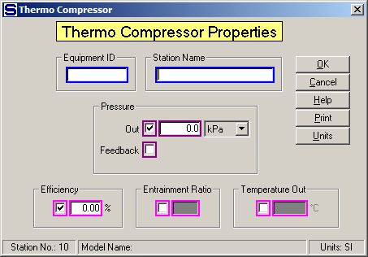

Equipment ID An equipment ID of up to 11 characters can be used to identify the station with an actual station in the process. Any combination of numbers and letters that are used in the factory/refinery to identify equipment can be entered. For example, Equipment ID = 123.456A. It is not necessary to make an entry in the Equipment ID field if the station in the model does not have a corresponding station in the factory/refinery.
Station Name A name of up to 20 characters must be entered for the station. For example, Station Name = Pan thermocomp.
Pressure The pressure of the flow out of the thermocompressor can be defined by either entering a value for the Pressure Out or selecting Feedback for the feedback pressure. Maroon colored borders are used to indicate that only one of these two fields can be selected.
Out Enter a value for the pressure out of the thermocompressor that will be held during the simulation. For example, Out = 145 kPa.
Feedback Left click the check box to use pressure feedback to define the pressure of the vapor leaving the thermocompressor. For example, if the flow out goes to a receiver that has another input flow that has a pressure value, the pressure value will be passed back to the thermocompressor as the flow out pressure.
Only one of the Efficiency, Entrainment Ratio and Temperature Out values can be entered (magenta border). Click on the box next to the entry field to select the one for entry.
Efficiency Enter a value for the Efficiency (%) of the entrainment of suction vapor by the motive steam instead of the Entrainment Ratio, or Temperature Out. The amount of entrained suction vapor will be calculated using the formula of Truffault, which is dependent upon the: temperature and pressure of the output flow, temperature of the suction vapor, and pressure of the motive steam. An allowance of 5% for nozzle wear is considered in the Truffault formula.
Entrainment Ratio Enter a value for the Entrainment Ratio instead of the Efficiency, or Temperature Out. Entrainment Ratio is the ratio of the vapor into the suction port 1 to the motive steam flow into port 0. The value entered for the Entrainment Ratio can be from the thermocompressor manufacturer, or from actual operating data.
Discharge Temperature Enter a value for the temperature of the vapor leaving the thermocompressor.